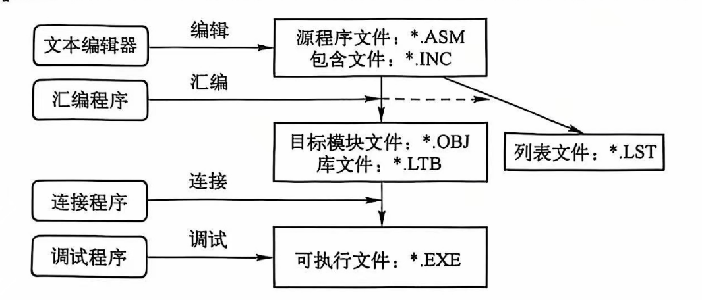

汇编语言程序设计笔记
汇编语言基础知识
本章是概念性章节，内容较少，直接列一个概念列表：
- 由冯 · 诺伊曼设计思想的计算机由五大部件组成：运算器、控制器、存储器、输入设备、输出设备。
- 数制：二进制、八进制、十进制、十六进制。
- 数制转换：低转高，乘权法；高转低，除基取余法。
- 数值的编码（计组的噩梦之一）：定点整数、原码、反码、补码、定点小数、浮点数。
- 数值编码：BCD码、ASCII码、Unicode编码。
- 寄存器：通用寄存器、段寄存器、指针寄存器、变址寄存器、控制寄存器、状态寄存器。
- 通用寄存器：数据寄存器（AX、BX、CX、DX）、指针寄存器（SP、BP）、变址寄存器（SI、DI）。
- 标志寄存器：状态标志（CF、PF、AF、ZF、SF）、控制标志（TF、IF、DF、OF）、系统标志（NT、IOPL、VM、RF）。
- 存储格式：
- 数据的存储格式：小端方式（8086 采用的方式），低对低、高对高；大端方式：低对高、高对低。
- 同一个地址既可以看作字节单元的地址，也可以看作字单元的地址，还可以看作双字单元的地址。
- 存储器的分段管理：8086 把存储器分成若干段，每段的大小最大为 64KB，每个存储单元可表示为“段基地址：偏移地址”。段基地址是段的起始地址除以 16 后的值，即必须形如“XXXX0H”，偏移地址是段内偏移量，可以用 16 位表示。
-
段寄存器的作用：
- CS：代码段寄存器，存放代码段的段基地址。指令寄存器 IP 存放指令的偏移地址，处理器利用 “CS:IP” 访问下一条指令。
- SS：堆栈段寄存器，存放堆栈段的段基地址。堆栈指针 SP 存放栈顶的偏移地址，处理器利用 “SS:SP” 访问堆栈段。
- DS：数据段寄存器，存放数据段的段基地址。
- ES：附加段寄存器，附加的数据段，也用于数据的保存。
-
（重要）寻址方式：
- 立即数寻址（立即寻址）：指令中直接给出操作数。
- 寄存器寻址：指令中直接给出寄存器名。
- 储存器寻址：直接寻址（指令中直接包含了有效地址，如：mov ax, [1000H]）；寄存器间接寻址（指令中给出寄存器名，寄存器中存放有效地址，如：mov ax, [bx]）；寄存器相对寻址(指令中给出寄存器名和偏移量，寄存器中存放基地址，如：mov ax, [bx+10H])；基址变址寻址（指令中给出基址寄存器、变址寄存器和偏移量，如：mov ax, [bx+si]）；相对基址变址寻址（指令中给出基址寄存器、变址寄存器、偏移量和段寄存器，如：mov ax, [bx+si+10H]）。
8086 的指令系统
全几把是各种指令，简要记下有哪些，具体含义翻教材。
- 数据传送指令：mov、xchg、xlat；
- 堆栈操作指令：push、pop（注意 push 的时候地址减少，pop 的时候地址增加）；
- 标志传送指令：lahf、sahf、pushf、popf；
- 地址传送指令：lea、lds、les；
- 算术运算指令：add、adc、inc、sub、sbb、dec、neg、cmp、mul、imul、div、idiv；
- 符号拓展指令：cbw、cwd；
- 逻辑运算指令：and、or、xor、not、test；
- 移位指令：shl、shr、sal、sar、rol、ror、rcl、rcr；
- 控制转移指令：jmp，太多了，可查 55 页表 2-3。
- 循环指令：loop、loopz、loopnz；
- 子程序指令：call（调用子程序）、ret（从子程序返回主程序）
- 中断指令：int（内部中断）、iret（外部中断）；
状态标志
- CF：进位标志，无符号数运算时，最高位是否有进位或借位。
- OF：溢出标志，有符号数运算时，运算结果是否超出范围。
- CF 和 OF 的区别：CF 表示无符号整数运算结果是否超出范围，超出范围后加上进位或借位运算结果依然正确；OF 表示有符号整数运算结果是否超出范围，超出范围后加上进位或借位运算结果不正确。
- SF：符号标志，结果的最高位。
- ZF：零标志，结果是否为 0。
- PF：奇偶标志，运算结果低八位中 1 的个数为 0 或者偶数时，PF=1；否则 PF=0。
算术指令
- 加法指令 ADD、ADC、INC
- 减法指令 SUB、SBB、DEC、NEG、CMP
- 乘法指令 MUL、IMUL
- 除法指令 DIV、IDIV
符号拓展
对于无符号数，高位置 0 即可拓展；对于有符号数，分别用 CBW 或 CWD 指令进行符号拓展。
十进制调整指令
为了实现在十六进制下进行十进制运算而进行的，比如 68h + 28h = 90h，执行 daa 后就会变成 96h，即十进制调整。
类似还有减法调整指令，das。还分压缩 BCD 码和非压缩 BCD 码，区别是前者用半个字节表示一个十进制位，而后者用一个字节表示一个十进制位。
位操作指令
- 逻辑运算指令 AND、OR、XOR、NOT、TEST(AND)
- 移位指令 SHL、SHR、SAL、SAR、ROL、ROR、RCL、RCR
转移类指令
- 无条件转移指令 JMP
- 利用 ZF：JZ、JE、JNZ、JNE
- 利用 SF：JS、JNS
- 利用 OF：JO、JNO
- 利用 PF：JP、JPE、JNP、JPO
- 利用 CF：JC、JB、JNAE、JNC、JNB、JAE
- 比较无符号数时用 Above 和 Blow，而有符号数时用 Greater 和 Less。
- 循环指令：LOOP(CX!=0)、LOOPZ/LOOPE(CX!=0 \&\& ZF=1)、LOOPNZ/LOOPNE(CX!=0 \&\& ZF=0)、JCXZ(CX!=0)
子程序指令
CALL、RET
中断指令
- 外部中断
- 可屏蔽中断
- 非屏蔽中断
- 内部中断（亦称“异常”）
- 除法错中断
- 指令中断
- 溢出中断
- 单步中断
汇编语言程序格式
